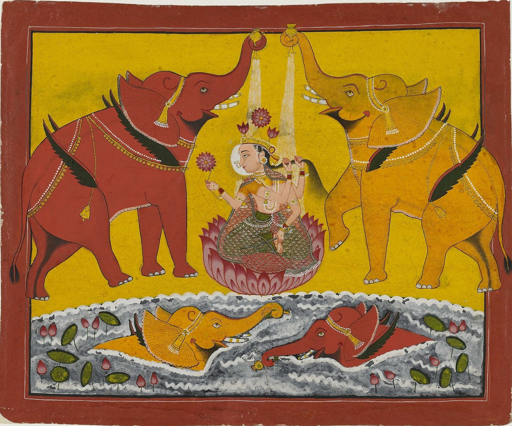

Chapter 6: The Aims of Life, Karma and Rebirth¶
karmaṇy evādhikāras te mā phaleṣu kadācana
mā karmaphalahetur bhūr mā te saṅgo ’stv akarmaṇi
To the deed alone you have a claim, never to what it yields. Let no reward be the reason you act; yet do not cling to doing nothing.
— Bhagavadgītā 2.47
6.1 Two Linked Questions¶
This chapter takes up two ideas that are often presented as the core of “the Indian view of life”: that human life has four legitimate aims (puruṣārtha) — dharma, wealth and power (artha), pleasure and love (kāma) and liberation (mokṣa) — and that actions (karma) bear fruit in this life and in future lives, so that beings pass through a beginningless round of rebirth (saṃsāra). Both ideas are old and widely shared. Both also have histories, rival versions and critics, and the comparative interest lies as much in the disagreements as in the agreements.
6.2 The Aims of Life¶
6.2.1 From three aims to four¶
The earliest scheme is a triad, the trivarga: dharma, artha and kāma. It appears in the Dharmasūtras, the epics, the Arthaśāstra and the Kāmasūtra, each of which treats one member of the triad as its subject while acknowledging the others. The Arthaśāstra (1.7) advises the king to pursue the three in balance, “not depriving himself of pleasure”, but records Kauṭilya’s own view that artha is primary, “for dharma and kāma are rooted in artha” (Olivelle 2013). The Kāmasūtra attributed to Vātsyāyana (perhaps 3rd century CE) likewise discusses the order of priority among the three and defends the legitimacy of a cultivated life of pleasure (Vātsyāyana 2002). Liberation, mokṣa, was added as a fourth aim later and remained in tension with the others: the three belong to life in the world, whereas mokṣa is release from it. Texts sometimes speak of the “four classes” (caturvarga) of aims, sometimes keep mokṣa apart.
The same triad organised literature outside Sanskrit. The Tamil Tirukkuṟaḷ is divided into three books: on virtue (aṟam), on wealth and polity (poruḷ) and on love (iṉpam or kāmam), corresponding to dharma, artha and kāma. It has no separate book on liberation (vīṭu), although its opening chapters praise God and renunciation (Chapter 5). Later Tamil commentators explained the absence by saying that liberation cannot be taught in words, or that it is the fruit of the other three rightly pursued. Classical Tamil poetics likewise divided poetry into akam (“interior”: love) and puṟam (“exterior”: war, kingship, generosity, death), a division that maps loosely onto kāma and artha. These parallels show that the scheme of the aims of life was a shared South Asian framework for organising knowledge and literature, adapted in different languages and traditions, rather than a purely Brahmanical doctrine.
6.2.2 Each aim and its literature¶
Dharma.
The first aim is the subject of the literature described in Chapter 5. It is usually ranked first among the three worldly aims, as the regulator of the others: wealth and pleasure pursued against dharma are condemned.
Artha.
Artha covers material prosperity, livelihood, property and, for the king, political power. Indian tradition did not idealise poverty for the householder; the householder’s earnings sustain the other stages of life and the gods through offerings. The Arthaśāstra, a composite treatise of c. 50 BCE–300 CE traditionally ascribed to Kauṭilya, is the classical text of statecraft and political economy (Volume 18). Lakṣmī, the goddess of prosperity and good fortune, embodies this aim in religious life (Figure 6.1).


Kāma.
Kāma includes erotic love but also, more broadly, the pleasures of the senses and the arts. The Kāmasūtra describes the life of the cultivated man-about-town (nāgaraka) and lists sixty-four arts (kalā) — singing, instrumental music, dance, painting, arranging flowers, making perfumes, word games, carpentry and many more — in which he, and the courtesan, should be skilled. Wendy Doniger and Sudhir Kakar, whose translation is now standard, emphasise that the text is a manual of urban sociability as much as of sex (Vātsyāyana 2002). The aesthetics of rasa, discussed in Chapter 21 and Volume 8, belongs in part to this world.
The legitimacy of kāma as an aim of life is reflected in the place of the erotic in Indian art and literature: in the love poetry of Sanskrit and Tamil, in the theory of the erotic rasa (śṛṅgāra), and in the sculpture of temples such as those at Khajuraho (10th–11th centuries) and Konark (13th century), whose erotic figures embarrassed Victorian visitors and some modern Indian reformers. Scholars have proposed many explanations of these sculptures — auspicious symbolism, tantric ritual, the depiction of the whole of life, royal display — and none has won general agreement. What is clear is that the Indian tradition did not, on the whole, treat sexual pleasure as sinful in itself, though it regulated it closely and regarded celibacy as the higher discipline for those seeking liberation. Women’s perspectives on kāma are harder to recover; the Kāmasūtra discusses the desires and strategies of women, including courtesans and wives, with some sympathy, but it is written for men (Vātsyāyana 2002).
The modern reception of the Kāmasūtra is itself a comparative story. The first English translation, prepared by the Indian scholars Bhagavanlal Indraji and Shivaram Parshuram Bhide for Richard Burton and Forster Fitzgerald Arbuthnot, was printed privately in 1883 by a “Kama Shastra Society” to evade Britain’s obscenity laws. It made the text famous in the West as a sex manual, an image that obscured both its broader concern with the cultivated life and its place in a sophisticated scholarly genre with its own commentaries, notably Yaśodhara’s Jayamaṅgalā (thirteenth century). In India, the text was for a time an embarrassment to reformers who wished to present Indian civilisation as spiritual and chaste; more recently it has been reclaimed as evidence of a frank and sophisticated attitude to pleasure. Both the Victorian exoticism and the nationalist embarrassment, Doniger has argued, misread a work whose subject was the art of living well within the social world of its time.
Mokṣa.
Liberation is understood very differently by different schools, as Table 6.1 shows. What they share is the idea of a final release from the round of rebirth driven by karma.
| Tradition | Conception of liberation |
|---|---|
| Advaita Vedānta | realisation that the self (ātman) is identical with Brahman; liberation is not a new state but the removal of ignorance; possible while living (jīvanmukti) |
| Viśiṣṭādvaita (Rāmānuja) | the self, a real mode of God, enjoys God’s presence eternally in Viṣṇu’s heaven, retaining its individuality |
| Dvaita (Madhva) | the self, eternally distinct from God and dependent on him, enjoys bliss according to its own nature |
| Sāṃkhya–Yoga | isolation (kaivalya) of the conscious self from matter |
| Nyāya–Vaiśeṣika | cessation of all specific qualities of the self, including pain and pleasure |
| Buddhism | nirvāṇa: the “blowing out” of greed, hatred and delusion; not the survival of a self |
| Jainism | the soul, freed of all karmic matter, rises to the top of the universe and abides in infinite knowledge, perception, bliss and energy |
6.2.3 Artha and Machiavelli¶
The Arthaśāstra, the principal treatise on statecraft, was lost to modern knowledge until 1905, when a manuscript reached the Oriental Research Institute at Mysore; R. Shamasastry published the text in 1909 and an English translation in 1915. Tradition attributes it to Kauṭilya, minister of Candragupta Maurya; Patrick Olivelle, its most recent translator, argues that the text as we have it is a composite work, put together and revised between about 50 BCE and 300 CE from earlier material (Olivelle 2013). Its frank discussion of espionage, assassination, the manipulation of religious sentiment and the use of deceit in foreign policy startled its first modern readers. Max Weber, in his lecture “Politics as a Vocation” (1919), remarked that by comparison Machiavelli’s The Prince was harmless.
The comparison with Machiavelli is natural and has been made often. Both authors treat politics as a domain with its own rationality, distinct from private morality; both are concerned with the acquisition and preservation of power; both are prepared to recommend deceit and violence when the security of the state requires them. But the differences are significant. The Arthaśāstra is a comprehensive manual of administration — of revenue, mines, forests, trade, law courts and public works — in which the methods of covert action occupy a part; its king is bound to protect his subjects, to maintain the social order of varṇa and āśrama, and to place the welfare of his people above his own pleasure. Machiavelli wrote for a particular Italian situation and was preoccupied with the founding of states and with republican liberty, which the Indian text does not consider. Each is best read as a document of its own world, and the comparison is useful chiefly because it dispels the idea that Indian thought was concerned only with the spiritual.
6.2.4 The stages of life¶
The aims of life were connected with the system of four “stages” (āśrama): the celibate student, the householder, the forest-dweller and the renouncer. The usual account matches each stage to an aim, with the householder pursuing artha and kāma within dharma and the renouncer pursuing mokṣa (Table 6.2). Patrick Olivelle’s study of the system shows that in the oldest Dharmasūtras the āśramas were alternative, lifelong vocations that a young man chose after his studentship; the familiar sequence of four stages through which one passes was a later “classical” reformulation, designed in part to subordinate renunciation to the householder’s obligations (Olivelle 1993). The tension between world-affirming householder religion and world-renouncing asceticism runs through Indian religious history, and the four-stage model was one way of managing it.
| Stage | Ideal way of life | Notes |
|---|---|---|
| student (brahmacārin) | celibate study of the Veda in the teacher’s house | open in theory to the three higher varṇas; in practice mainly Brahmins; excluded women and Śūdras |
| householder (gṛhastha) | marriage, children, ritual duties, earning, hospitality | praised by Manu as the stage on which all others depend |
| forest-dweller (vānaprastha) | withdrawal to the forest, with or without the wife; austerities | rarely practised as described; largely a textual ideal by the classical period |
| renouncer (saṃnyāsin) | abandonment of ritual fires, property and social ties; wandering, begging, seeking liberation | in the earliest texts an alternative to householdership; later placed last in life |
6.2.5 The renouncer and the householder¶
Louis Dumont, in a famous essay on “world renunciation in Indian religions”, argued that the key to Indian religious history lies in the dialogue between the man-in-the-world, bound by the duties of caste and family, and the renouncer, who leaves society to seek liberation as an individual. Most of the new religious ideas of India, on this view, were invented by renouncers — the Upaniṣadic sages, the Buddha, Mahāvīra, the founders of sects — and then adapted for householders (Dumont 1980). The thesis has been criticised as too schematic, and Olivelle’s work on the āśramas shows that the relation between the two ideals was negotiated in different ways at different times (Olivelle 1993). But it captures something important. The Buddhist and Jain monastic orders, the Hindu ascetic orders established in the medieval period and the many independent holy men and women of every century offered an alternative to the life of the householder; and the householder’s religion of ritual, pilgrimage and devotion was shaped by the need to answer the renouncer’s challenge. The Sikh Gurus, by contrast, rejected renunciation and taught that the householder’s life of work and family is the right setting for devotion — another answer to the same question.
6.2.6 Renunciation compared¶
Renunciation of household life for a religious goal is not unique to India, and comparison helps to bring out what was distinctive. Christian monasticism, from the desert fathers of fourth-century Egypt to the Benedictine and later orders of Europe, also involved celibacy, poverty and obedience, and also developed a tension between the contemplative life and life in the world. But Christian monks lived, after the early period, in permanent communities under a written rule, with the eucharist at the centre of their life, and Protestant Christianity rejected monasticism altogether as a superior way. Islam generally discouraged celibate renunciation — a saying attributed to the Prophet declares that there is no monasticism in Islam — though Sufi orders developed forms of discipline and retreat. In India the Buddhist and Jain orders, like the Christian ones, were organised communities with codes of discipline; the Brahmanical renouncer (saṃnyāsin) was in principle a solitary wanderer, though monastic institutions grew up later around figures such as Śaṅkara (Chapter 9). Dumont saw the renouncer as the Indian “individual-outside-the-world”, the one person who stood outside the hierarchical order of caste (Dumont 1980). The comparison suggests that the Indian traditions gave renunciation an unusually central place in their scheme of values, while at the same time — through the doctrine of the aims of life and the stages of life — working hard to keep it in balance with the life of the householder.
6.2.7 Who could pursue the aims?¶
The scheme was formulated for twice-born men. The student stage, the Vedic learning it involved and the right to renunciation were in principle closed to Śūdras and to women. Women’s dharma was defined largely through marriage, and the classical texts gave them little independent access to mokṣa, although devotional and renunciant women — Buddhist nuns, Jain nuns, the Vīraśaiva Akka Mahādēvi, Lal Ded in Kashmir, Mīrābāī in Rajasthan — found their own paths, often in conflict with family and society. The modern habit of presenting the puruṣārthas as a universal model of balanced human flourishing is attractive, but it is a modern universalisation of a scheme that was originally addressed to a privileged minority.
6.2.8 Resolving the tension: the Gītā¶
How can a life in the world be compatible with liberation from it? The Bhagavadgītā’s answer is action without attachment to its fruits (niṣkāma karma), quoted at the head of this chapter: one should do one’s duty, offering the results to God, and such action does not bind. The Gītā combines this “discipline of action” (karmayoga) with the disciplines of knowledge and devotion. It made possible a religious ideal for the householder that did not require renunciation, and it was this teaching that Tilak, Gandhi and Aurobindo made central to their modern reinterpretations (Chapters 11 and 12).
6.2.9 Buddhist and Jain parallels¶
Buddhist and Jain texts do not use the scheme of the four aims, but they address similar questions. The Buddha rejected both sensual indulgence and extreme asceticism in favour of a “middle way”; he gave lay followers practical advice on earning and keeping wealth (the Sigālovāda Sutta, Dīgha Nikāya 31, is a famous example) while teaching that the highest happiness is nibbāna. Right livelihood (sammā ājīva) is one of the eight limbs of the noble path. Jainism distinguished the full vows of monks and nuns from the lesser vows (aṇuvrata) of lay people, who could pursue wealth within limits; Jain merchant communities became among the most prosperous in India. In both traditions the lay life is a legitimate but lesser path, oriented ultimately towards release.
6.3 Karma and Rebirth: Origins¶
6.3.1 The early Upaniṣads¶
The word karma originally meant “action” and, in the Vedic context, above all ritual action. In the early Upaniṣads it acquires the sense of action that determines a person’s future existence. In the Bṛhadāraṇyaka Upaniṣad (3.2.13), the sage Yājñavalkya takes his questioner aside and tells him privately that “one becomes good by good action and bad by bad action”, as if this were new and secret teaching. Later in the same text (4.4.5) he declares that “as a person acts, as he behaves, so he becomes”. The Chāndogya Upaniṣad (5.10) describes two paths after death — the path of the gods for those who know, and the path of the fathers for those who perform rituals and good works — and adds that those whose conduct here has been pleasant will enter a pleasant womb, while those whose conduct has been foul will enter the womb of a dog, a pig or an outcaste (Olivelle 1998). The combination of karma with a hierarchy of births, including social hierarchy, is present from the beginning.
6.3.2 Debates about origins¶
Where did these ideas come from? Some scholars trace them to developments within Vedic ritual thought, in which the results of sacrifice were stored up for the sacrificer’s future. Others, notably Johannes Bronkhorst, argue that rebirth and karmic retribution belonged originally to the culture of “Greater Magadha” in the eastern Ganges valley — the homeland of the Jains, Buddhists and Ājīvikas — and were absorbed into Brahmanical thought (Bronkhorst 2007). Gananath Obeyesekere has compared Indian ideas of rebirth with those of small-scale societies elsewhere and of ancient Greece, and argued that the distinctive Indian contribution was the “ethicisation” of rebirth, making the quality of the next life depend on moral conduct (Obeyesekere 2002). Wendy Doniger O’Flaherty’s edited volume remains a valuable survey of the classical variety (O’Flaherty 1980). These debates are unresolved; what is clear is that by the time of the Buddha and Mahāvīra the doctrine was common ground among most religious movements of north India.
6.4 Karma in the Traditions¶
6.4.1 Buddhist karma: intention without a self¶
The Buddha redefined karma as intention. “It is intention (cetanā), monks, that I call karma,” he says in a discourse of the Aṅguttara Nikāya (6.63); “having intended, one acts by body, speech and mind.” Unintended harm does not carry the same weight as deliberate harm. Buddhists faced a philosophical difficulty peculiar to their system: if there is no permanent self, who is reborn and who reaps the fruit of an action? The answer, developed in texts such as the Milindapañha, is that rebirth is a continuity of causally connected mental and physical processes, like a flame lit from another flame, so that the reborn being is “neither the same nor another” (Harvey 2013; Gethin 1998). Buddhist texts are not free of the association of karma with social status: a discourse in the Majjhima Nikāya (135) explains poverty, ugliness and low birth as the results of past misdeeds. But the Buddhist emphasis on intention and the denial that birth confers spiritual worth gave the doctrine a different social direction.
In practice, Buddhist lay life has long been organised around the making of merit (puñña). Lay people give food to monks, support monasteries, keep the precepts on holy days and sponsor rituals and buildings, in the expectation that these good actions will bring favourable results in this life and the next. A practice that might seem to contradict the strict doctrine of individual karma — the “transfer” or sharing of merit, in which the donor dedicates the merit of a good deed to deceased relatives or to all beings — became widespread in both Theravāda and Mahāyāna Buddhism, and inscriptions from early Indian Buddhist sites record donations made for the benefit of the donor’s parents. Scholars have debated whether this practice represents a departure from the Buddha’s teaching or a natural development of the idea that the intention of rejoicing in another’s good deed is itself meritorious. Similar tensions between strict individual karma and the desire to help others, especially the dead, appear in Hindu ancestral rites (śrāddha) and in the Mahāyāna ideal of the bodhisattva who gives away his merit. The comparison shows that the doctrine of karma, however rigorous in theory, was everywhere softened in practice by the claims of family, compassion and grace.
6.4.2 Jain karma: a fine matter¶
For the Jains, as Chapter 3 explained, karma is a subtle matter that clings to the soul when it is moved by passion. Every action, intentional or not, involves some harm to living beings and attracts karma, though intentional violence binds far more strongly. Liberation therefore requires not only right intention but the cessation of activity and the burning off of accumulated karma by austerity. The Jain theory is the most systematic and in some ways the most “physical” of the Indian theories; Padmanabh Jaini’s account remains the best introduction (Jaini 1979).
6.4.3 Ājīvika fatalism and Cārvāka denial¶
Not all Indian thinkers accepted the moral efficacy of action. The Ājīvikas, whose leader Makkhali Gosāla was a contemporary and rival of the Buddha and Mahāvīra, taught that everything is determined by fate (niyati) and that beings pass through a fixed number of births before release, whatever they do. The Buddha singled out this doctrine for particular criticism because it denied the value of effort. The materialists known as Cārvākas or Lokāyatas denied rebirth altogether, holding that consciousness arises from the combination of the elements and ends with the body. Their texts survive only in fragments quoted by their opponents, but their presence shows that karma and rebirth were never beyond dispute.
6.4.4 Brahmanical theories¶
Within the Brahmanical schools the mechanism of karma was explained in several ways. The Mīmāṃsā school posited an unseen potency (apūrva) produced by a sacrifice, which persists until it bears fruit. The Nyāya theologians, especially Udayana (11th century), argued that unconscious karma cannot by itself distribute its results justly and that God (īśvara) must be the dispenser of the fruits of action. Vedānta commentators distinguished accumulated karma (sañcita), the portion that has begun to bear fruit in the present life (prārabdha) and the karma being created now (āgāmin or kriyamāṇa); knowledge of Brahman destroys the first and prevents the third, but the second must run its course, which explains why a liberated person continues to live until the body falls away. Wilhelm Halbfass’s essays trace these debates and their philosophical stakes (Halbfass 1991).
6.5 Fate, Effort and Grace¶
6.5.1 Destiny and human effort¶
Does the doctrine of karma imply fatalism? Most Indian thinkers said no. Present circumstances are the results of past actions, but present actions are free and shape the future. The epics and the nīti literature debate the relative weight of “fate” (daiva) and “human effort” (puruṣakāra), and generally come down on the side of effort. A well-known verse in the Hitopadeśa puts it pithily: tasks are accomplished by effort, not by wishing; deer do not walk into the mouth of a sleeping lion. The Yogavāsiṣṭha (Chapter 2) insists that “fate” is nothing but the effort of the past.
6.5.2 Grace¶
Devotional theologies raised a different question: can God’s grace override karma? The answers varied. In the Śrīvaiṣṇava tradition after Rāmānuja, two schools debated the role of the devotee’s own effort in surrender: the northern (Vaṭakalai) school compared the soul to a baby monkey that must cling to its mother, the southern (Teṅkalai) school to a kitten that the mother cat carries without its effort. Śaiva Siddhānta made grace (Tamil aruḷ) the final cause of release. Vallabha’s “path of grace” (puṣṭimārga) taught that grace is unconditioned by merit. The Bhagavadgītā (18.66) itself ends with a promise of release from all sins to the one who takes refuge in Kṛṣṇa alone. Grace in these traditions did not abolish karma, but it qualified the picture of a mechanical moral law (Carman 1974).
6.6 Rebirth in Comparative Perspective¶
Belief in rebirth is not unique to India. Some ancient Greek thinkers — the Pythagoreans, Empedocles and Plato, whose Republic ends with the myth of Er describing souls choosing their next lives — taught the transmigration of souls; ideas of rebirth are found among many small-scale societies in Africa, the Americas and elsewhere. Obeyesekere argued that what distinguishes the Indian traditions is the systematic linking of rebirth to the ethical quality of actions, and the goal of escaping rebirth altogether (Obeyesekere 2002).
In the twentieth century, some researchers attempted to investigate rebirth empirically. The American psychiatrist Ian Stevenson (1918–2007) of the University of Virginia collected and published, from the 1960s onwards, hundreds of cases, many from India and Sri Lanka, of young children who were said to remember previous lives, and argued that some of them were difficult to explain except by reincarnation. His work was conducted with more care than most writing on the subject, and it was taken seriously by some scholars; but critics pointed out that the cases depended on the testimony of families who often believed in rebirth beforehand, that contamination of the children’s statements by information from adults was hard to exclude, and that the cases were most common in cultures where rebirth was expected. The scientific community has not accepted that rebirth has been demonstrated. The episode is mentioned here because claims that “science has proved” rebirth are often made in popular Indian writing; they rest on this contested body of case studies and on nothing stronger.
Within India, the traditions that came from outside the subcontinent took different views. Islam and Christianity teach a single earthly life followed by resurrection and judgement, and most Indian Muslims and Christians reject rebirth; some Sufis and some Indian Christian thinkers engaged with the idea in dialogue, but it did not become part of their teaching. The Sikh Gurus accepted the round of birth and death and the force of actions, but placed the emphasis on the divine order (hukam) and on God’s gracious glance (nadar), through which the devotee who remembers the divine name is released; for Sikhs, as for the devotional Hindu traditions, karma is real but not the last word. The comparison shows that karma and rebirth, though shared across most Indian religions, were not shared across all the religions of India.
6.7 Modern Reinterpretations¶
In the late nineteenth and twentieth centuries the doctrines of the aims of life and of karma were reinterpreted to meet the needs of a colonised society seeking self-respect and political action. The decisive text was the Bhagavadgītā. B. G. Tilak, in the Gītā Rahasya (written in Mandalay prison and published in 1915), argued against the dominant renunciatory interpretation that the Gītā teaches above all the discipline of action (karmayoga) — that the enlightened person continues to act for the welfare of the world. Aurobindo’s Essays on the Gita read it as a gospel of divine action in the world. Gandhi, who translated it into Gujarati as Anāsaktiyoga (“The Yoga of Non-attachment”, completed in 1929), read it as teaching selfless service and, allegorically, non-violence. Vivekananda’s Karma Yoga presented work done without attachment as a path to liberation open to all (Chapter 10).
These readings turned a text that had been used to justify renunciation, or the duties of caste, into a charter for social and political activism. Ambedkar dissented sharply. In unfinished writings on the history of ancient India he argued that the Gītā was a defence of the class system against the Buddha’s egalitarian challenge, and that its doctrine of svadharma bound each person to the occupation of his birth. The disagreement between Gandhi’s and Ambedkar’s readings of the same text is a vivid example of the way in which modern Indians argued about their tradition by arguing about the meaning of its scriptures (Chapter 12).
The word “karma” itself has entered English and other languages in a popular sense — something like “what goes around comes around” — that has lost most of its technical meaning. The popular sense is a small example of the global careers of Indian ideas discussed in Part III of this volume.
6.8 Objections and Uses¶
6.8.1 Karma as theodicy¶
Max Weber described the doctrine of karma, combined with caste, as “the most consistent theodicy ever produced by history”: it explained every inequality of birth as deserved, and promised that obedience to one’s caste duties would be rewarded in a future life (Weber 1958). The remark is one-sided, but it identifies a real use of the doctrine. Texts from the Chāndogya Upaniṣad onward linked birth in a low caste to past misdeeds, and the doctrine could be, and was, used to justify the suffering of the poor and the outcaste as merited.
Indian critics of caste saw this clearly. The devotional poets denied that God respects caste, and so implicitly denied that low birth reflects spiritual unworthiness. Ambedkar rejected the Brahmanical doctrine of karma as an instrument of caste, and in The Buddha and His Dhamma he reinterpreted the Buddhist doctrine to exclude the transmigration of a soul and to make karma a principle of moral responsibility in this life rather than an explanation of inherited status (Ambedkar 1957). Some Buddhist scholars regard his interpretation as a departure from canonical teaching; it is, in any case, a deliberate and argued response to a real problem.
6.8.2 Other objections¶
Classical and modern critics raised further objections. If the round of rebirth has no beginning, how did inequality first arise? The traditions answered that there was no first moment, so the question does not arise — an answer that satisfies some readers and not others. How can the results of action be stored and transmitted without a mechanism? The Mīmāṃsakas, Naiyāyikas, Buddhists and Jains each proposed one, and each criticised the others’. Can karma be known? Defenders appealed to scripture, to the testimony of yogis said to remember past lives, and to the argument that karma best explains the inequalities of birth; critics, from the Cārvākas to modern sceptics, have found these reasons inadequate. These are live philosophical questions, and the sophistication of the classical debates is one of the treasures of Indian philosophy (Volume 3).
6.8.3 Modern analogies¶
Modern writers have compared the classical theory of latent impressions (saṃskāra) and dispositions (vāsanā) — which in the Yoga and Buddhist traditions are laid down by actions and condition future perception and behaviour — with modern psychological accounts of habit, implicit memory and conditioning. The analogy is suggestive and has been used fruitfully in psychology (Chapter 20 and Volume 22). It should not be pressed too far. The classical theory explains rebirth and liberation; modern psychology does not deal with either, and its accounts of habit rest on experimental evidence of a kind the classical theorists did not seek.
6.9 Assessment¶
The four aims of life and the doctrine of karma were among the most widely shared ideas of pre-modern India, and they shaped Indian ethics, law, literature and religious practice. A comparative account must recognise both their range and their limits. The aims of life were a balanced and humane scheme for the twice-born householder; for others they were partly closed. Karma made moral responsibility central to the understanding of the world; it was also used to justify inequality, and Indians argued about its meaning, mechanism and truth for more than two millennia. Its modern reinterpretations, from Vivekananda’s to Ambedkar’s, belong to the same history of debate.
Further Reading¶
-
Olivelle (1993): the history of the āśrama system.
-
Vātsyāyana (2002) and Olivelle (2013): translations of the Kāmasūtra and the Arthaśāstra.
-
O’Flaherty (1980) and Obeyesekere (2002): karma and rebirth in classical and comparative perspective.
-
Bronkhorst (2007): the case for the eastern origins of karma and rebirth.
-
Halbfass (1991): philosophical essays on karma, dharma and related concepts.
-
Harvey (2000): Buddhist ethics, including intention and karma.